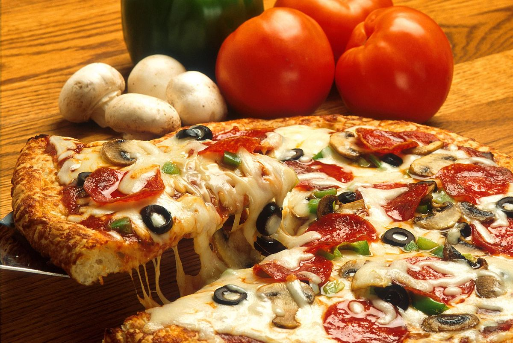

Homemade Pizza

Pizza is a crowd-pleasing choice for busy weeknights and fun
weekend dinners alike. But you don't have to rely on
restaurants or takeout for top-notch pizza. Read on for tips
on how to make your own pizza at home. We'll walk you through
how to make pizza crust, how to top a pizza, pizza baking
temperature, and how long to bake pizza. Plus, we'll share
some of our favorite homemade pizza recipes to try.
Ingredients
- 1 pound ground breakfeast sausage
- 1 (8 ounce) package refrigerated crescent rolls
- 1 cup frozen hash brown potatoes, thawed
- 1 cup shredded Cheddar cheese
- 5 eggs
- 1/4 cup milk
- 1/2 teaspoon salt
- 1/8 teaspoon ground black pepper
- 1/4 cup grated Parmesan cheese
How yo make a homemade Pizza
- Preheat the oven to 375 degrees F (190 degrees C).
- Brown breakfast sausage in a large skillet until no longer
pink and the meat is crumbly, about 10 minutes. Drain off excess
grease; set sausage aside.
- Separate crescent-roll dough into triangles and place in a rimmed
12-inch pizza pan, points toward the inside. Press the triangles
together to join; pinch dough so it comes 1 1/2 inches up the side
of the pan.
- Spoon cooked sausage over crust. Spread hash browns over sausage
and sprinkle with Cheddar.Whisk eggs, milk, salt, and black pepper
in a bowl until smooth and pour egg mixture over cheese. Sprinkle
pizza evenly with Parmesan.
- Bake in the preheated oven until eggs are set and crust is lightly
browned, 25 to 30 minutes.